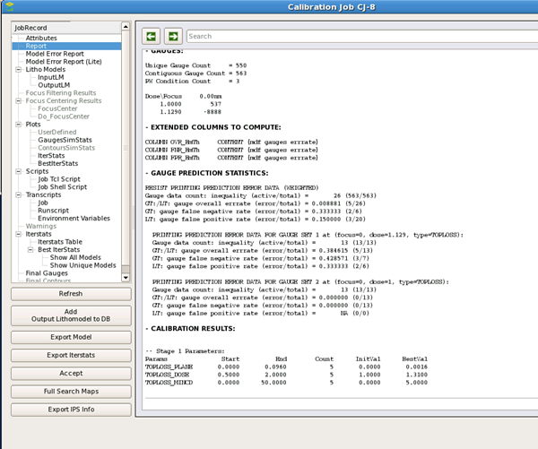
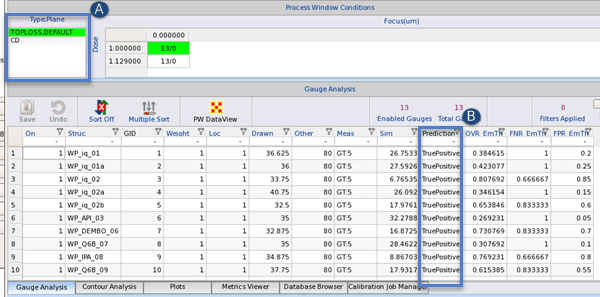

When a toploss calibration job successfully
completes, use the View button in the Calibre nmModelflow
GUI to view the results.
Prediction results can be found in the following
locations:
Report section —
The Report section includes a Gauge Prediction Statistics subsection as
part of the Optimization Report.

Gauge Analysis tab
— Click
Accept to view the prediction in
the Gauge Analysis tab. You may need to select the SRAF type in
the Type/Plane selector (
A in
the figure) if CD is the default display. The Prediction column
(
B in
the figure) shows the result of the calibration run.
